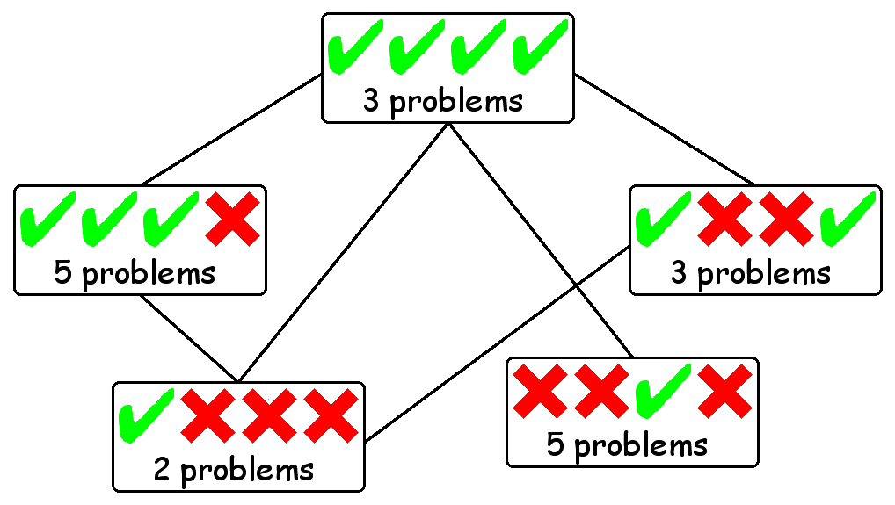

Compatibility Graphs and Cliques
Compatibility Graphs
- Performance vector for each problem
- Vertex for each performance vector + sets of problems
- Edges between vertices with compatible vectors

Cliques
- Represent homogeneous sets of problems
- Maximal clique measures homogeneity wrt systems
- Measure fraction of problems (56%)
- Measure fraction of nodes (60%)
- Greedy search used to approimately find the maximal clique
- Successively remove nodes of minimal degree and size